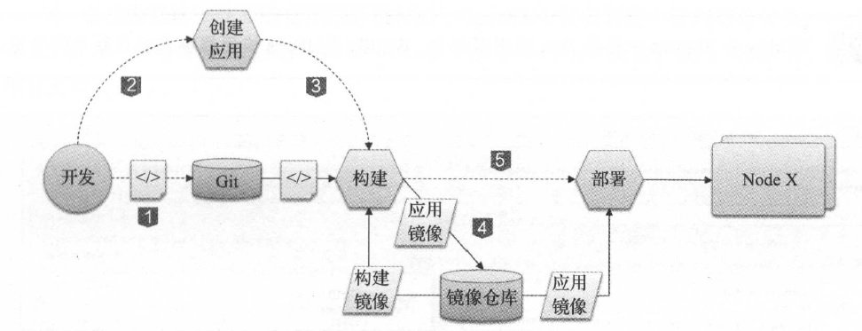
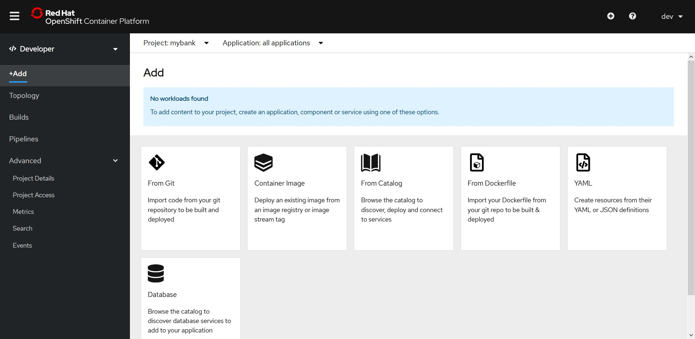
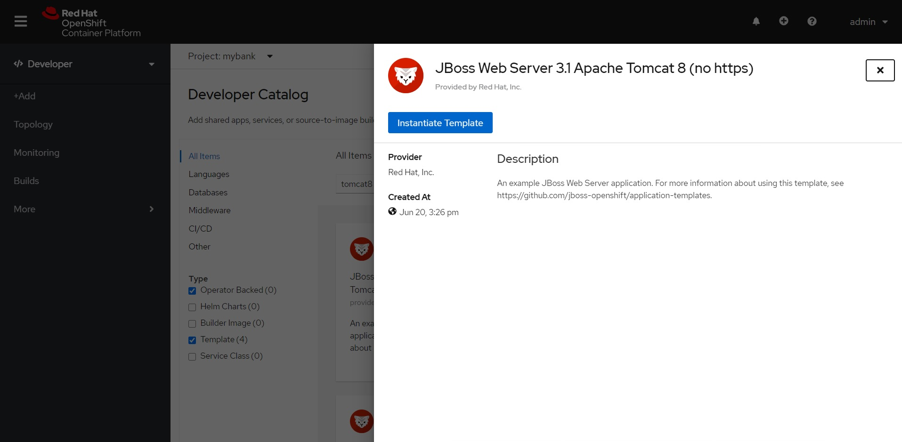
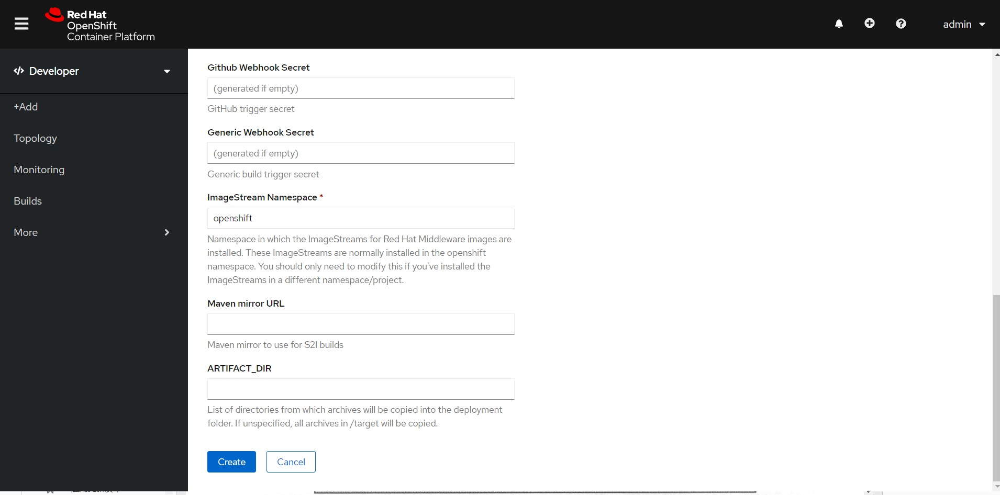
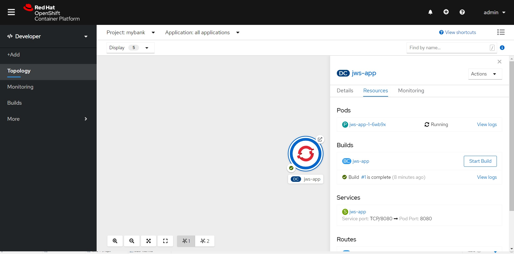

5. 容器应用的构建与部署自动化¶
有人认为容器的世界非常美妙， 一切都唾手可得。当我们需要一个MySQL 时，只需要运行一个MySQL 的镜像，稍等片刻， MySQL 的服务就可以使用了。当我们的项目需要持续集成服务时，只需要启动一个Jenkins 镜像便万事大吉了。但是现实是， MySQL 和Jenkins都是“别人家的应用”。企业自身开发的应用并没有现成的镜像可以直接下载。用户必须自行负责应用的容器化，自行构建应用的镜像。接下来将通过对一个Java 应用进行容器化，探究应用容器化的步骤和注意事项。
5.1. 一个Java 应用的容器化之旅¶
本节把一个简单的Java Web 应用 - My Bank 进行容器化。MyBank 是一个非常简单和典型的Java Web 应用。
它包含了Java 源代码、JSP 文件、图片和CSS 等静态资源文件。
MyBank 的项目结构是基于Maven 的要求布置的，通过Maven 可以编译和构建My Bank 的部署包一WAR 包。
和其他的应用程序一样， MyBank 在开发过程中，它的所有源代码都被上传到了配置管理库进行版本控制。这里所用的配置管理服务器是GitHub 。
下面开始容器化这个应用。
1 ）首先安装源代码工具Git。
[root@master ~# yum install -y git
2 ）从GitHub 上下载示例的Java 应用源代码。
[root@master ~]# cd /opt
[root@master opt]# git clone https://github.com/nichochen/mybank-demo-maven
3 ）准备编译和构建环境。安装应用构建所需的Java 开发工具包JDK 及构建工具Maven 。
[root@master opt ] # yum install -y maven
4 ）通过构建工具编译及构建应用。
[root@master opt]# cd mybank-demo-maven/
[root@mastermybank-demo-maven]# mvn package
构建完毕后，将在target 目录下生成一个WAR 包ROOT.war 。
[root@mastermybank-demo-maven]# ls target/
classes maven-archiver maven-status ROOT ROOT.war surefire-reports test-classes
5 ）选择满足应用运行要求的基础容器镜像，或者从基础的操作系统镜像开始安装和构建。为了方便，这里选择Tomcat 7 的官方镜像tomcat:7.0.70-jre7-alpine 。一般推荐预先把镜像下载到本地，以方便本地调试。
[root@mastermybank-demo-maven]# docker pull tomcat:7.0.70-jre7-alpine
6 ）编写Dockerfile 。这个例子中我们的逻辑比较简单就是把构建好的应用部署包拷贝 到发布目录。Dockerfile 示例如下。
[root@mastermybank-demo-maven] # cat Dockerfile
FROM tomcat:7.0.70-jre7-alpine
ADD ./target/ROOT.war /usr/local/tomcat/webapps/mybank.war
7 ） 执行Docker Build 构建镜像。把镜像命名为mybank-tomcat。在没有指定镜像的tag的请求下，默认的标签为latest 。
[root@mastermybank-demo-maven]# docker build -t mybank-tomcat .
Sending build context to Docker daemon 4.194 MB
Step 1 : FROM tomcat:7.0.70-jre7-alpine
---> ffe5379d7563
Step 2 : ADD ./target/ROOT.war /usr/local/tomcat/webapps/mybank.war
---> 113cc34fc0e4
Removing intermediate container f04b6e3a9989
Successfully built 113cc34fc0e4
构建完毕后，可以看见刚才Docker Build生成的新镜像09cf49110ce2 。
[root@mastermybank-demo-maven]# docker images|grep mybank-tomcat
mybank-tomcat latest 24fca8e8ad7a 56 seconds ago 150MB
8 ） 测试镜像。通过docker run 命令测试新创建的镜像。这里通过参数-p 8080:8080 把容器的8080 端口映射到主机的8080 端口，以方便测试。
[root@mastermybank-demo-maven]# docker run -it -p 8080:8080 mybank-tomcat
容器启动完毕后，可以通过curl 或浏览器测试应用是否工作正常。如果一起正常，通过浏览器访问My Bank 的主页就会看到一只可爱的小猪储蓄罐了。
[root@mastermybank demo-maven]# curl http://master.example.com:8080/mybank/
Note
此时单击MyBank应用主页的服务网点按钮将会出现报错页面。请别惊慌，因为这个页面依赖的数据库目前还没有创建。后续的章节中会解决这个问题。
9 ）推送镜像。测试通过后，下一步将把镜像发布到相应的镜像仓库中。先通过docker tag 创建指向目标镜像仓库的镜像名称，然后通过docker push 推送镜像至目标仓库。
[root@master ~ l # docker tag my bank-tomcat:latest registry.your-registry.com/mybank-tomcat:latest
[root@master ~]# docker push registry.your-registry.com/mybank-tomcat:latest
通过以上的步骤完成了一个简单应用的容器化。在没有特殊需求的情况下，容器化过程不算复杂。但是在现实中是，每次应用更新后，总是需要构建一次镜像。在当前应用变更及交付节奏如此迅速的年代，如果这个过程通过人工来完成的话，这将会是一个非常大的负担。
5.2. OpenShift 构建与部署自动化¶
在OpenShift 上，应用的镜像构建和部署是自动化的。为了提升开发的效率， OpenShift提供了Source to Image ( S2I ）流程，帮助用户自动构建镜像。在S2I 流程中， OpenShift 会下载应用的源代码，进行自动化的编译和构建，并将输出的应用部署包部署到容器中。最终S2I 会输出一个包含应用和基础运行环境的崭新镜像。当S2I 构建结束后， OpenShift 会自动触发一次部署，将S2I 生成的镜像按一定的规则部署到集群中。
Note
S2I 和应用开发语言没有直接的绑定。无论是脚本型的语言，如PHP , Ruby 、Python或Perl 等， 还是编译型的语言，如Java 、C 、C＋＋ 或Go 等，都支持通过S2I 构建镜像。
在应用更新的场景中，开发用户提交代码到配置管理库。通过配置管理库向OpenShift发送消息触发构建，构建会下载更新的代码，并进行构建。构建完毕后，新的镜像更新到内部镜像仓库。随后，OpenShift将会进行更新部署，更新集群内的容器应用。
一个典型的OpenShift应用构建及部署的流程如图5-1 所示。

开发工程师将应用源代码提交至配置管理库进行版本管理。
用户创建应用。输入源代码仓库的地址；选择S2I 构建的基础镜像（又称Builder 镜像） 。Builder 镜像中包含了操作系统、编程语言、框架等应用所需的软件及配置。OpenShift默认提供了多种编程语言的Builder 镜像，如Java 、PHP , Ruby 、Python 、Perl 等。用户也可以根据自身的需求定制自己的Builder 镜像，并发布到服务目录中供用户选用。
用户或系统触发S2I构建。OpenShift将实例化S2I构建执行器。S2I 构建执行器将从用户指定的代码仓库下载源代码并实例化Builder 镜像。源代码将会被注人实例化的Builder容器中。Builder 容器将根据预定义的逻辑执行源代码的编译、构建并完成部署。
S2I 构建执行器将完成操作的Builder 镜像commit 成新的Docker 镜像。新的镜像被推送到OpenShift内部的镜像仓库。S2I 构建执行器更新该次构建相关的Image Stream 信息。
OpenShift感知到Image Stream 的变化后触发一个部署。应用的镜像被分发到具体的Node 节点，并实例化成容器。
图5-1 OpenShift核心组件及流程
5.2.1. 快速构建部署一个应用¶
前面通过于工的方式容器化了MyBank 应用。下面介绍如何通过OpenShift快速对MyBank应用进行容器化并部署。
以dev 用户登录OpenShift Web 控制台。创建一个名为my bank的项目，如图5-2 所示。
图5-2 创建项目
2 ）切换到Developer视图，单击页面上方的+Add 按钮。在目录中选择From Catalog， 如图5-3 所示。
图5-3 选择From Catalog
3 ）在“Filter by keyword…”里输入“Tomcat8”。在服务目录中选择JBoss Web Server 3.1 Apache Tomcat 8 (no https)，如图5-4所示。
图5-4 选择Builder 镜像
4 ）在参数输入界面，Git Repository URL输入地址https://github.com/nichochen/mybank-demo-maven，Git Reference输入master，Context Directory为空值， 最后点击Create按钮。如图5-5 所示。
图5-5 输入应用源代码地址
Note
针对Java 应用， S2I 默认调用项目Maven 的package 动作进行编译、构建和打包。用户也可以用自定义的S21 构建脚本，执行自定义的构建逻辑。比如许多老的项目不用Maven，而使用Ant进行构建。
5 ） 单击参数输入界面的Create 按钮后， OpenShift 就会创建一系列后台对象，进而触发S2I 流程。 单击拓扑图DC jws-app图标， 右边会显示该应用的DC信息。
在DC页面，可以看到MyBank 应用已经成功创建，有一个构建正在执行，如图5-6所示。
图5-6 MyBank 应用成功创建
稍等片刻后，应用就会构建、部署完毕。
Note
构建的过程需要连接互联网下载应用的源代码、Maven 构建所需的Jar 包以及Builder镜像，请确保实验机器能连接上互联网。
6 ）单击界面上的View Log 链接，转跳到此次构建的日志页面，可见S2I 在后台进行的一系列操作。 在S2I 构建日志页面的最底部可以看到S2I 构建的最后一步是将生成的镜像推送到内部的镜像仓库中。
此时如果检查实验主机本地的Docker 镜像列表，同样可以看见MyBank 应用的镜像。
容器部署完毕，检查容器的状态，可以看见MyBank 应用容器的状态为Running 。
$ oc get pods
NAME READY STATUS RESTARTS AGE
jws-app-1-6wb9x 1/1 Running 0 12m
jws-app-1-build 0/1 Completed 0 13m
jws-app-1-deploy 0/1 Completed 0 12m
7 ）最后可以点击DC页面的路由超链接， 访问该应用的主页。
5.2.2. 镜像构建： Build Config 与Build¶
在前文的示例中，用户只需要给出应用源代码的位置以及选定Builder 镜像，即可快速将应用从代码变成运行的实例。这个应用部署的过程对于用户来说是非常精简的，在这背后OpenShift自动生成了相关的对象来支撑这个流程。
通过oc 命令行客户端以dev 用户登录到OpenShift。
[root@master ~]# oc login -u dev
Logged into "https://192.168.172.167:8443" as "dev" using existing credentials .
Using project "my bank".
在上一个示例中，当用户在参数输入界面单击Create 按钮后， OpenShift会创建一个名为Build Config （构建配置）的对象。通过oc get bc 命令，用户可以看见OpenShift 为jws-app 应用创建的Build Config 。
$ oc get bc
NAME TYPE FROM LATEST
jws-app Source Git@master 1
通过输出可见项目中存在一个名为mybank 的Build Config 。通过命令oc get bc jws-app -o yaml ， 可以进一步获取这个Build Config 的具体配置信息。
apiVersion: build.openshift.io/v1
kind: BuildConfig
metadata:
creationTimestamp: "2020-08-15T14:24:31Z"
labels:
application: jws-app
jws31: "1.4"
template: jws31-tomcat8-basic-s2i
template.openshift.io/template-instance-owner: fee9ca06-ef36-4a3a-b5e2-07c3cc7d9dea
name: jws-app
namespace: mybank
resourceVersion: "313404"
selfLink: /apis/build.openshift.io/v1/namespaces/mybank/buildconfigs/jws-app
uid: 628e3b76-b60a-4e45-8e5c-1aa9b0aff99d
spec:
failedBuildsHistoryLimit: 5
nodeSelector: null
output:
to:
kind: ImageStreamTag
name: jws-app:latest
postCommit: {}
resources: {}
runPolicy: Serial
source:
git:
ref: master
uri: https://github.com/nichochen/mybank-demo-maven.git
type: Git
strategy:
sourceStrategy:
env:
- name: MAVEN_MIRROR_URL
- name: ARTIFACT_DIR
forcePull: true
from:
kind: ImageStreamTag
name: jboss-webserver31-tomcat8-openshift:1.4
namespace: openshift
type: Source
successfulBuildsHistoryLimit: 5
triggers:
- github:
secret: osyJXhuk
type: GitHub
- generic:
secret: F7MKNRhC
type: Generic
- imageChange:
lastTriggeredImageID: image-registry.openshift-image-registry.svc:5000/openshift/jboss-webserver31-tomcat8-openshift@sha256:2523697eaf80080238fe5ff904296ebe6549a45b3f52a5b42c72771fea1697df
type: ImageChange
- type: ConfigChange
status:
lastVersion: 1
通过输出，可见Build config 中记录了前文示例引用的源代码地址和所选择的Builder 镜像的信息。
源代码仓库信息如下： source: git:
ref: master uri: https://github.com/nichochen/mybank-demo-maven.git
type: Git
前文选择的Builder 镜像的信息如下：
- sourceStrategy:
- from:
kind: ImageStreamTag name: jboss-webserver31-tomcat8-openshift:1.4 namespace: openshift
type: Source
Builder 镜像没有直接指向某个实际的镜像地址，而是指向了一个Image Stream 。在前面的章节曾经提及， OpenShift定义了Image Stream 的概念来管理一组镜像的集合。在一个Image Stream中可以定义多个镜像名称和Tag ，然后再指向实际的Docker 镜像。
output 属性定义了此次构建输出的镜像名。下面的配置定义了构建结果将会输出到一个名为jws-app:latest 的Image Stream 标签所指向的地址。
- output:
- to:
kind: ImageStreamTag name: jws-app:latest
通过oc get is，可以查看到这个名为jws-app 的Image Stream 。这个Image Stream 是在部署应用时， OpenShift 在后台自动创建的。
$ oc get is
NAME IMAGE REPOSITORY TAGS UPDATED
jws-app default-route-openshift-image-registry.apps-crc.testing/mybank/jws-app latest 26 minutes ago
通过oc describe is jws-app ，可以查看该Image Stream 的详细信息。通过输出可以看到jws-app:latest 这个Image Stream 标签实际指向了镜像image-registry.openshift-image-registry.svc:5000/mybank/jws-app@sha256:a58fe29c96cf6c405b260b169710d4feb472018ca911c440d4ee89972caf471b
$ oc describe is jws-app
Name: jws-app
Namespace: mybank
Created: 29 minutes ago
Labels: application=jws-app
jws31=1.4
template=jws31-tomcat8-basic-s2i
template.openshift.io/template-instance-owner=fee9ca06-ef36-4a3a-b5e2-07c3cc7d9dea
Annotations: <none>
Image Repository: default-route-openshift-image-registry.apps-crc.testing/mybank/jws-app
Image Lookup: local=false
Unique Images: 1
Tags: 1
latest
no spec tag
* image-registry.openshift-image-registry.svc:5000/mybank/jws-app@sha256:a58fe29c96cf6c405b260b169710d4feb472018ca911c440d4ee89972caf471b
28 minutes ago
Build Config 只是静态的配置信息。OpenShift 根据这个静态的配置信息可以触发多次实际的构建实例，构建的实例称为Build 。一个Build Config 可以被多次触发， 生产多个Build 。通过oc get build 命令，可以看到列表中已经有了一次构建记录，这是OpenShift在我们单击Create 按钮后自动触发的。
$ oc get build
NAME TYPE FROM STATUS STARTED DURATION
jws-app-1 Source Git@d5837f1 Complete 32 minutes ago 1m16s
执行oc logs build/jws-app-1 命令，用户可以查看此次构建的详细信息。这与在Web 控制台看到的日志信息相同。
如果想执行一次新的部署，可以执行oc start-build jws-app 命令。
$ oc start-build jws-app
build.build.openshift.io/jws-app-2 started
再次查看oc get build 的结果，将会发现多了一条jaw-app-2 的构建记录。
5.2.3. 镜像部署： Deployment Config 与Deploy¶
前文查看Build Config 定义时，可以看到output 部分定义了输出的镜像所指向的Image Stream的名字。这个Build Config 指向的Image Stream 是在创建部署时， OpenShift为jws-app 应用创建的。S2I 流程完成后，生成的应用镜像会被推送到内部镜像仓库。同时，更新相关的Image Stream ，把jaw-app:latest 指向镜像所在镜像仓库的实际位置。
执行命令oc describe is jaw-app 可以查看Image Stream 标签的实际指向。因为之前触发了两次构建，所以在latest 标签的历史记录中可以看到有两条镜像的信息。
$ oc describe is jws-app
Name: jws-app
Namespace: mybank
Created: 36 minutes ago
Labels: application=jws-app
jws31=1.4
template=jws31-tomcat8-basic-s2i
template.openshift.io/template-instance-owner=fee9ca06-ef36-4a3a-b5e2-07c3cc7d9dea
Annotations: <none>
Image Repository: default-route-openshift-image-registry.apps-crc.testing/mybank/jws-app
Image Lookup: local=false
Unique Images: 2
Tags: 1
latest
no spec tag
* image-registry.openshift-image-registry.svc:5000/mybank/jws-app@sha256:7fff2607176eb4a52539dad3baf4f1736f306c9da7af737dd107e94fe96279ce
39 seconds ago
image-registry.openshift-image-registry.svc:5000/mybank/jws-app@sha256:a58fe29c96cf6c405b260b169710d4feb472018ca911c440d4ee89972caf471b
34 minutes ago
当Image Stream 的标签更新后， OpenShift 就会触发一次部署。和构建一样，部署也有配置定义对象： Deployment Config 。Deployment Config 描述了镜像部署的参数和要求。通过oc get dc 命令可以查看项目中的Deployment Config 列表。
$ oc get dc
NAME REVISION DESIRED CURRENT TRIGGERED BY
jws-app 2 1 1 config,image(jws-app:latest)
执行oc get dc jws-app -o yaml 命令，可以查看该Deployment Config 的详细定义。
$ oc get dc jws-app -o yaml
apiVersion: apps.openshift.io/v1
kind: DeploymentConfig
metadata:
creationTimestamp: "2020-08-15T14:24:31Z"
generation: 3
labels:
application: jws-app
jws31: "1.4"
template: jws31-tomcat8-basic-s2i
template.openshift.io/template-instance-owner: fee9ca06-ef36-4a3a-b5e2-07c3cc7d9dea
name: jws-app
namespace: mybank
resourceVersion: "318000"
selfLink: /apis/apps.openshift.io/v1/namespaces/mybank/deploymentconfigs/jws-app
uid: 1dd45924-27eb-4832-881b-7aad1680cebd
spec:
replicas: 1
revisionHistoryLimit: 10
selector:
deploymentConfig: jws-app
strategy:
activeDeadlineSeconds: 21600
recreateParams:
timeoutSeconds: 600
resources: {}
type: Recreate
template:
metadata:
creationTimestamp: null
labels:
application: jws-app
deploymentConfig: jws-app
name: jws-app
spec:
containers:
- env:
- name: JWS_ADMIN_USERNAME
value: VgjmANTs
- name: JWS_ADMIN_PASSWORD
value: Ty70aKYj
image: image-registry.openshift-image-registry.svc:5000/mybank/jws-app@sha256:7fff2607176eb4a52539dad3baf4f1736f306c9da7af737dd107e94fe96279ce
imagePullPolicy: Always
name: jws-app
ports:
- containerPort: 8778
name: jolokia
protocol: TCP
- containerPort: 8080
name: http
protocol: TCP
readinessProbe:
exec:
command:
- /bin/bash
- -c
- curl --noproxy '*' -s -u VgjmANTs:Ty70aKYj 'http://localhost:8080/manager/jmxproxy/?get=Catalina%3Atype%3DServer&att=stateName'
|grep -iq 'stateName *= *STARTED'
failureThreshold: 3
periodSeconds: 10
successThreshold: 1
timeoutSeconds: 1
resources: {}
terminationMessagePath: /dev/termination-log
terminationMessagePolicy: File
dnsPolicy: ClusterFirst
restartPolicy: Always
schedulerName: default-scheduler
securityContext: {}
terminationGracePeriodSeconds: 60
test: false
triggers:
- imageChangeParams:
automatic: true
containerNames:
- jws-app
from:
kind: ImageStreamTag
name: jws-app:latest
namespace: mybank
lastTriggeredImage: image-registry.openshift-image-registry.svc:5000/mybank/jws-app@sha256:7fff2607176eb4a52539dad3baf4f1736f306c9da7af737dd107e94fe96279ce
type: ImageChange
- type: ConfigChange
status:
availableReplicas: 1
conditions:
- lastTransitionTime: "2020-08-15T15:00:26Z"
lastUpdateTime: "2020-08-15T15:00:26Z"
message: Deployment config has minimum availability.
status: "True"
type: Available
- lastTransitionTime: "2020-08-15T15:00:14Z"
lastUpdateTime: "2020-08-15T15:00:27Z"
message: replication controller "jws-app-2" successfully rolled out
reason: NewReplicationControllerAvailable
status: "True"
type: Progressing
details:
causes:
- imageTrigger:
from:
kind: DockerImage
name: image-registry.openshift-image-registry.svc:5000/mybank/jws-app@sha256:7fff2607176eb4a52539dad3baf4f1736f306c9da7af737dd107e94fe96279ce
type: ImageChange
message: image change
latestVersion: 2
observedGeneration: 3
readyReplicas: 1
replicas: 1
unavailableReplicas: 0
updatedReplicas: 1
在Deployment Config 中，除了可以看见当前部署配置引用的镜像地址外，还可以看见该镜像部署传递的环境变量列表、容器对外暴露的端口等信息。以下为部署引用的镜像地址，与Image Stream jws-app 的latest 标签指向的地址值相匹配。
在DeployConfig 中会定义Trigger （触发器），使部署在某些特定条件下自动触发，如S2I完成时。在mybank 的Deploy Config 中可以看见其中定义了一个ImageChange 的触发器，这个触发器的类型为ImageStrearnTag ，指向了jws-app:latest 。所以当MyBank 应用的S2I构建完成， Image Stream 中的latest 标签更新至最新的镜像地址时，该触发器就会被触发，根据该Deployment Conftg 的定义产生一次部署的实例。
每个Deployment Config 可以被多次触发，每一次触发称为一个Deploy 。每一次Deploy都会生成一个Replication Controller 对象，用以监控容器的状态。Replication Contoller （复制 控制器）是Kubernetes 中的一个组件，其负责监控容器的实际数量， 5.3.1 节会详细介绍。
执行命令oc get rc 可以看到目前项目中有两个Replication Controller 实例，因为执行了两次构建，部署了两次。可以注意到Replication Controller jws-app-1 的DESIRED 和CURRENT 属性的值都是0 ，因为第一次部署的容器实例已经被第二次部署的实例替换了，所以当前没有实例在运行。
$ oc get rc
NAME DESIRED CURRENT READY AGE
jws-app-1 0 0 0 41m
jws-app-2 1 1 1 7m25s
在Deployment Config 中，可以定义容器运行的细节设置， 如容器的启动命令、容器可用的CPU和内存配置、容器的Liveness （检查容器是否在运行）及Readyness （检查服务是否就绪）检查。
5.2.4. 服务连通： Service 与Route¶
在介绍OpenShift 架构时曾经提及容器的IP 地址在容器退出后就会释放，基于同一个镜像启动的新容器将会拥有一个新的IP。为了避免容器的IP 变化给第三方调用产生的影响， OpenShift 中使用了Service 对象进行解耦。Service 将有一个相对恒定的IP 地址。在部署MyBank 应用时，OpenShift会自动生成Deployment Config 对应的Service 。通过oc describe svc jws-app可以查看MyBank 应用的Service 信息。
$ oc describe svc jws-app
Name: jws-app
Namespace: mybank
Labels: application=jws-app
jws31=1.4
template=jws31-tomcat8-basic-s2i
template.openshift.io/template-instance-owner=fee9ca06-ef36-4a3a-b5e2-07c3cc7d9dea
Annotations: description: The web server's http port.
Selector: deploymentConfig=jws-app
Type: ClusterIP
IP: 172.30.83.113
Port: <unset> 8080/TCP
TargetPort: 8080/TCP
Endpoints: 10.128.0.70:8080
Session Affinity: None
Events: <none>
基于Service, OpenShift 同时也自动创建了对应的Route 。执行oc get route jws-app命令，可以查看MyBank 应用的Route 的详情。
$ oc describe route jws-app
Name: jws-app
Namespace: mybank
Created: 48 minutes ago
Labels: application=jws-app
jws31=1.4
template=jws31-tomcat8-basic-s2i
template.openshift.io/template-instance-owner=fee9ca06-ef36-4a3a-b5e2-07c3cc7d9dea
Description: Route for application's http service.
Annotations: openshift.io/host.generated=true
Requested Host: jws-app-mybank.2886795286-80-host20nc.environments.katacoda.com
exposed on router default (host apps-crc.testing) 48 minutes ago
Path: <none>
TLS Termination: <none>
Insecure Policy: <none>
Endpoint Port: <all endpoint ports>
Service: jws-app
Weight: 100 (100%)
Endpoints: 10.128.0.70:8080
OpenShift 自动生成一个域名jws-app-mybank.2886795286-80-host20nc.environments.katacoda.com, 可以通过oc edit route 将其修改为用户希望使用的域名，如mybank.apps.example.com 。
5.3. 弹性伸缩¶
容器的一个很大的特点就是，其能较好地保证应用运行的一致性。相对于物理机部署和虚拟机部署，容器应用的启动速度较快，启动的成本较低。容器云平台上实现容器的弹性伸缩可以有效保证应用服务质量，也提高了数据中心资源的利用率。
5.3.1. Replication Controller¶
在OpenShift 中，每一个部署的应用的容器实例数量在其Deployment Config 中定义。实际部署时， OpenShift 为每次的部署实例化一个Replication Controller ，并将该数值传递给相关联的Replication Controller 。Replication Controller 是Kubernetes 的一个组件，其负责维护容器实例的数量。
通过oc get pod 命令，可以看到当前MyBank 应用的活动实例数为1 。
$ oc get pods
NAME READY STATUS RESTARTS AGE
jws-app-1-build 0/1 Completed 0 51m
jws-app-1-deploy 0/1 Completed 0 49m
jws-app-2-bhk94 1/1 Running 0 15m
jws-app-2-build 0/1 Completed 0 17m
jws-app-2-deploy 0/1 Completed 0 15m
Note
jws-app-*-build的容器状态为Completed，实际上已经不再运行了，可以忽略。
5.3.2. 扩展容器实例¶
通过Replication Controller ，可以快速控制容器实例的数量，调整容器集群的大小。
执行oc scale dc jws-app –replicas=2 命令可以将MyBank 应用弹性伸缩至2个实例。
片刻后再检查容器数量，会发现容器的数量已经从l 增加为2 了。
$ oc scale dc jws-app --replicas=2
deploymentconfig.apps.openshift.io/jws-app scaled
$ oc get pods
NAME READY STATUS RESTARTS AGE
jws-app-1-build 0/1 Completed 0 53m
jws-app-1-deploy 0/1 Completed 0 52m
jws-app-2-bhk94 1/1 Running 0 18m
jws-app-2-build 0/1 Completed 0 20m
jws-app-2-deploy 0/1 Completed 0 18m
jws-app-2-ncvm8 1/1 Running 0 9s
查看Replication Controller 的状态，可以看到当前的容器数量已经被更新为2 。
$ oc get rc
NAME DESIRED CURRENT READY AGE
jws-app-1 0 0 0 53m
jws-app-2 2 2 2 19m
5.3.3. 状态自恢复¶
前面提到， Replication Controller 负责监控运行中容器的状态和数量。当实际运行的容器数量与部署定义的容器数量不同时， Replication Controller 将负责还原容器集群的状态至用户定义的状态。如当容器集群中的某个容器意外退出时， Replication Controller 将会启动一个新的容器实例以替代异常退出的容器实例。
删除运行中的Pod ，让其中一个容器做出意外退出的假象， Replication Controller 将检测到这个问题，并自动启动一个新的容器实例以填补缺失。
值得指出的是，在OpenShift上部署容器，不一定要定义Replication Controller 。可以直接部署一个Pod ，但是没有Replication Controller 监控的部署，在当前的Pod 退出后不会有新的Pod 启动来补充缺失。
5.4. 应用更新发布¶
应用上线以后，事情还没有结束。市场的需求是永不停滞的，这意味着应用的更新也是无休止的。应用的更新部署和以往相比变得更加频繁。在容器时代，应用的更新也意味着镜像更新。通过人工方式完成应用镜像的构建和部署流程，效率低下，而且容易出错。因此，构建一个自动化的镜像和制定部署流程就变得尤为需要。
5.4.1. 触发更新构建¶
OpenShft通过S2I 自动构建应用容器镜像。完成应用更新的修改，将变更提交至代码配置库后，便可在OpenShift触发一次构建。构建完成后便可触发一次部署，最终将当前在运行的容器实例更新为新的容器实例。在OpenShift中触发一个部署有两种方式：手动触发及WebHook 触发。
用户可以选择在OpenShift的Web Console 中单击项目概览页面侧栏菜单中的Builds ，选择相应的Build Config 条目进入详情页面，单击页面右上角的Start Build按钮触发一次部署，也可以执行命令oc start-build <BUILD CONFIG NAME> 触发。
此外，每个Build Config 都定义了两个WebHook 触发器。一个是GitHubWebHook ， 一个是Generic WebHook 。在MyBank 应用的Build Config 中，可以看到如下的GitHubWebHook和Generic WebHook 的触发器配置。
triggers:
- github:
secret: osyJXhuk
type: GitHub
- generic:
secret: F7MKNRhC
type: Generic
这两个Webhook 的调用地址格式为： https://<MASTER 节点地址：端口>/oapi/v1/namespaces/<项目名>/buildconfigs/<Build Config名>/webhooks/<密码>/<类型>
我们的例子中， MyBank 应用的GitHub Webhook 的调用地址为： https://192.168.172.167:8443/oapi/v1/namespaces/mybank/buildconfigs/jws-app/webhooks/osyJXhuk/github
Generic WebHook 的调用地址为： https://192.168.172.167:8443/oapi/v1/namespaces/mybank/buildconfigs/jws-app/webhooks/F7MKNRhC/generic
Note
登录Web 控制台，在MyBank础的Build Config 的详情页面的Configuration 页签中也可以看到GitHubWebhook 和Generic Webhook 的地址。
Generic Webhook 的使用很简单，只需要向调用地址发送POST 请求即可触发，十分适 合与第三方系统集成。
GitHub Web hook 需要用户登录到GitHub，然后将GitHub Web hook 的地址配置到GitHub的仓库中。在企业的私有容器云中，由于环境安全隔离限制，企业内部使用GitHub Web Hook的做法不常见， Generic Webhook 更有现实的意义。
5.4.2. 更新部署¶
构建结束后，更新部署被触发。OpenShift 的更新部署策略有Rolling 和Recreate 两种。
Rolling （滚动更新）是指OpenShift 在部署时，会等一定数量的新版本容器实例启动完毕后，再终结一定数量的老版本容器实例，通过这种方式对容器集群中的实例进行逐一替换更新。滚动更新是OpenShift的默认更新方式，这种方式可以保证应用在更新发布的过程中不会出现服务中断。以下是MyBank 应用的Deployment Config 中关于更新策略的定义。
OpenShift 提供的另一种部署方式为Recreate （重新创建） 。这种方式在更新时会将所有的老容器应用先停止，然后再启动一批新版本的容器实例。可以看到，jws-app应用使用的是Recreate的方式。
$ oc describe dc jws-app
Name: jws-app
Namespace: mybank
Created: 11 minutes ago
Labels: application=jws-app
jws31=1.4
template=jws31-tomcat8-basic-s2i
template.openshift.io/template-instance-owner=99137c6a-bb6f-42ad-9335-63c976878cc4
Annotations: <none>
Latest Version: Not deployed
Selector: deploymentConfig=jws-app
Replicas: 1
Triggers: Image(jws-app@latest, auto=true), Config
Strategy: Recreate
Template:
Pod Template:
Labels: application=jws-app
deploymentConfig=jws-app
Containers:
jws-app:
Image: jws-app
Ports: 8778/TCP, 8080/TCP
Host Ports: 0/TCP, 0/TCP
Readiness: exec [/bin/bash -c curl --noproxy '*' -s -u URdOUVNg:Lsw0O13d 'http://localhost:8080/manager/jmxproxy/?get=Catalina%3Atype%3DServer&att=stateName' |grep -iq 'stateName *= *STARTED'] delay=0s timeout=1s period=10s #success=1 #failure=3
Environment:
JWS_ADMIN_USERNAME: URdOUVNg
JWS_ADMIN_PASSWORD: Lsw0O13d
Mounts: <none>
Volumes: <none>
Latest Deployment: <none>
Events: <none>
5.5. 本章小结¶
本章围绕OpenShift 容器云的核心功能应用的构建和部署进行了详细的讨论。本章通过于工的方式容器化了一个Java 应用MyBank ，然后通过OpenShi 位完成了一次部署以进行对比。通过介绍后台对象Build Config 、Build 、Deployment Config 、Deploy 、Service 及Route ,了解了OpenShift 自动化构建及部署背后的细节。在讨论应用更新的环节，了解了两种构建触发器GitHub Webhook 和Gerice Webhook ，以及Rolling 和Recreate 两种部署策略。
本章的内容为后续使用Open Shi 位容器平台解决实际工作中遇到的问题打下了基础。